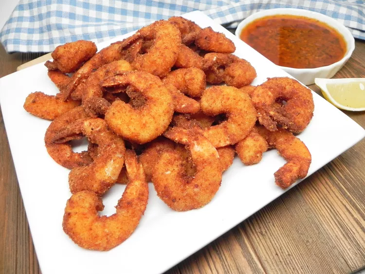

Breaded Shrimp

Description
Ingredients
- 1 quart vegetable oil for frying
- 4 cups shrimp, peeled and deveined
- 1 large egg, beaten
- 2 cups dry bread crumbs
Steps
- Gather the ingredients.
- Heat oil in a deep fryer or large saucepan to 350 degrees F (175 degrees C).
- Working one at a time, dip shrimp into beaten egg, allowing any excess egg to drip back into the bowl.
- Press into bread crumbs to coat both sides.
- Place the breaded shrimp, unstacked, onto a plate.
- Repeat with remaining shrimp.
- Lower breaded shrimp carefully into preheated oil in batches.
- Fry until crispy and golden brown, about 4 to 5 minutes.
- Transfer to a paper towel-lined plate to drain.
- Repeat with remaining breaded shrimp.